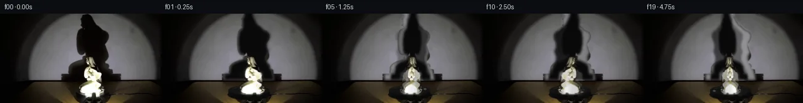

![首帧]()

Round 00
2026-11-05T01:02:51.101601+00:00像素候选变化代码 +269/−0inspection 更新
pixels 8a312533555ed738 · code c8e94e2a6e4d84f6
查看本轮 generate.py 真实 diff
--- previous/generate.py +++ current/generate.py @@ -0,0 +1,269 @@ +#!/usr/bin/env python3 +"""Generate a photographic 20-frame turntable continuation from the supplied frame. + +Only local pixel operations are used. The method is deliberately conservative: +the source remains the environment plate, while extracted foreground/shadow layers +receive synchronized pseudo-3D warps driven by one increasing rotation angle. +""" + +from pathlib import Path + +import cv2 +import numpy as np +from PIL import Image, ImageDraw + +from artifact_io import save + + +ROOT = Path(__file__).resolve().parent +H, W = 144, 256 +WALL_BOTTOM = 108 +CX = 140.0 + + +def smoothstep(edge0, edge1, x): + x = np.clip((x - edge0) / (edge1 - edge0), 0.0, 1.0) + return x * x * (3.0 - 2.0 * x) + + +def clean_wall_plate(source): + """Build the hidden wall by a robust radial illumination reconstruction.""" + yy, xx = np.indices((H, W), dtype=np.float32) + # The projected spot is slightly wider than high in the photograph. + radius = np.sqrt(((xx - 139.0) * 0.78) ** 2 + ((yy - 59.0) * 1.05) ** 2) + lum = cv2.cvtColor(source, cv2.COLOR_RGB2GRAY).astype(np.float32) + + # A smooth, measured spotlight profile. Values are based on upper quantiles + # from each annulus so the dark cast shadow does not bias the reconstruction. + knots_r = np.array([0, 12, 22, 32, 44, 58, 72, 88, 104, 122, 145], np.float32) + knots_l = np.array([151, 150, 148, 144, 138, 130, 120, 105, 82, 38, 8], np.float32) + model_l = np.interp(radius, knots_r, knots_l).astype(np.float32) + + # Keep the mild cool-neutral wall cast and synthesize only very low amplitude + # texture from a heavily blurred copy of the source residual. + wall_rgb = np.stack((model_l * 1.005, model_l * 0.995, model_l * 1.015), axis=2) + residual = source.astype(np.float32) - cv2.GaussianBlur( + source.astype(np.float32), (0, 0), 7.0 + ) + wall_rgb += np.clip(residual, -3.0, 3.0) * 0.28 + return np.clip(wall_rgb, 0, 255).astype(np.uint8), model_l + + +def filled_component(mask, min_area=20): + """Keep meaningful connected regions, close gaps, and fill silhouette holes.""" + mask = (mask > 0).astype(np.uint8) * 255 + n, labels, stats, _ = cv2.connectedComponentsWithStats(mask, 8) + kept = np.zeros_like(mask) + for i in range(1, n): + if stats[i, cv2.CC_STAT_AREA] >= min_area: + kept[labels == i] = 255 + kept = cv2.morphologyEx(kept, cv2.MORPH_CLOSE, np.ones((7, 7), np.uint8)) + contours, _ = cv2.findContours(kept, cv2.RETR_EXTERNAL, cv2.CHAIN_APPROX_SIMPLE) + filled = np.zeros_like(mask) + cv2.drawContours(filled, contours, -1, 255, thickness=cv2.FILLED) + return filled + + +def extract_shadow(source, model_l): + """Recover the large original wall silhouette against expected beam light.""" + lum = cv2.cvtColor(source, cv2.COLOR_RGB2GRAY).astype(np.float32) + yy, xx = np.indices((H, W)) + roi = (yy < WALL_BOTTOM) & (xx >= 96) & (xx <= 187) + dark = (lum < np.maximum(31.0, model_l * 0.42)) & roi & (model_l > 34) + hard = filled_component(dark.astype(np.uint8), min_area=35) + + # Restrict to the known silhouette corridor, then retain a soft penumbra. + corridor = np.zeros((H, W), np.uint8) + poly = np.array( + [[126, 0], [151, 0], [158, 16], [174, 28], [174, 55], + [165, 72], [174, 83], [180, 106], [101, 106], [102, 82], + [116, 70], [121, 49], [119, 24]], np.int32 + ) + cv2.fillPoly(corridor, [poly], 255) + hard = cv2.bitwise_and(hard, corridor) + hard = cv2.morphologyEx(hard, cv2.MORPH_CLOSE, np.ones((5, 5), np.uint8)) + alpha = cv2.GaussianBlur(hard.astype(np.float32) / 255.0, (0, 0), 2.0) + alpha[WALL_BOTTOM:] = 0 + return np.clip(alpha, 0, 1) … diff truncated; 182 more lines …